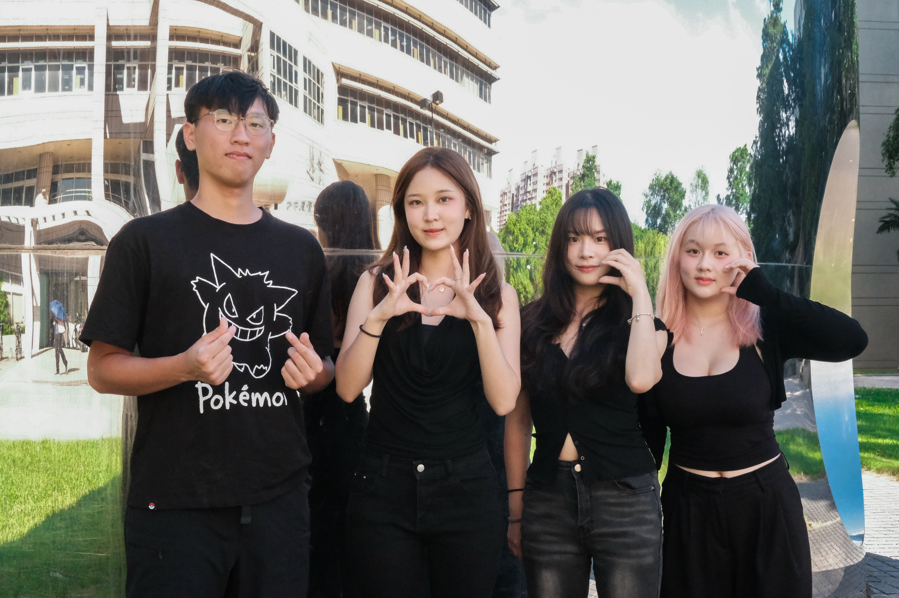
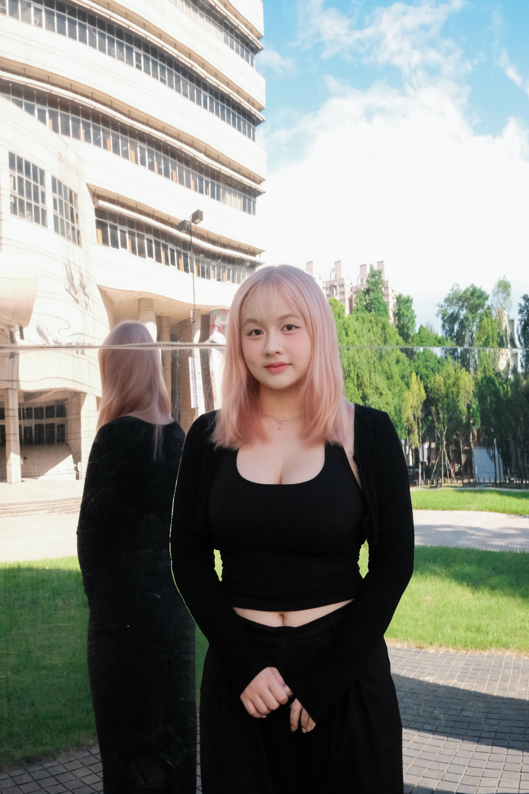
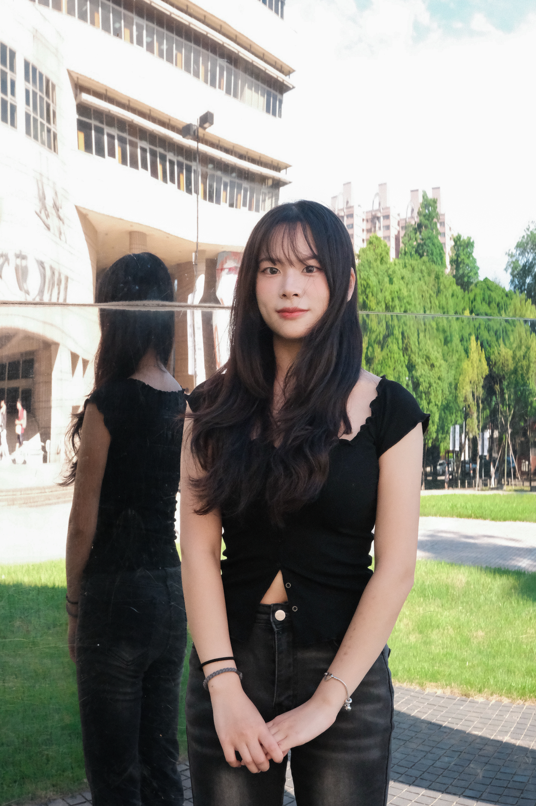
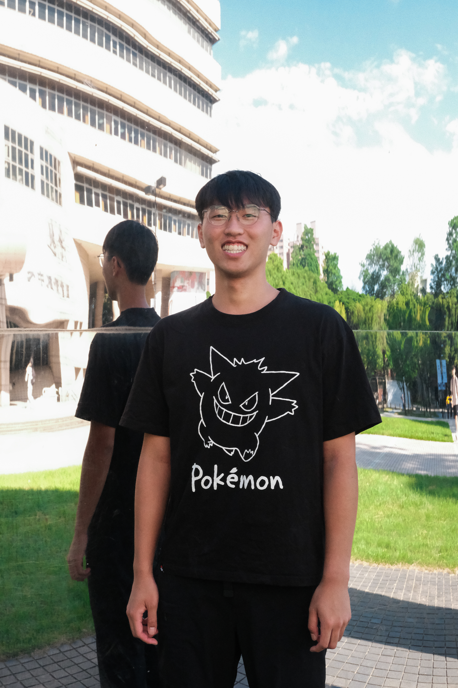

漁生
TEAM & MEMBERS


 INSTAGRAM
INSTAGRAM YOUTUBE
YOUTUBE
職人篇人物採訪｜文章撰寫
影片拍攝｜影片剪輯

網站開發
漁民篇人物採訪｜文章撰寫
影片拍攝｜影片剪輯

花絮編輯｜人物採訪
影片拍攝｜影片剪輯

食物篇人物採訪｜文章撰寫
影片拍攝｜影片剪輯

Introduction
依山傍海的南方澳，曾是臺灣繁榮的漁業重鎮。隨著時代變遷，漁港的產業與生活樣貌逐漸改變，但人與海之間的連結，始終沒有消失。
《漁生》以宜蘭南方澳為起點，走進這座與海共生的小鎮，透過漁民、漁業加工業者、餐飲經營者及在地居民的生命故事，記錄漁港的日常、產業的轉變，以及不同世代對海洋的理解與情感。
從漁船出港到魚貨上岸，從傳統漁業到地方創新，我們試著探索海洋如何形塑南方澳的生活，也看見人們如何在環境與時代的變化中，尋找新的可能。 海，不只是南方澳的風景，更是許多人賴以維生的日常。《漁生》希望透過影像與文字，讓更多人走近這座漁港，看見那些持續與海同行的故事。
指導教授：黃淑鈴
Visual Outcomes

《漁生》以南方澳為主角，透過文字、影像與聲音，記錄人與海共生的日常。我們走進港邊，聆聽漁民、職人與店家的故事，並將這些聲音放回地圖上，讓觀者循著空間脈絡認識南方澳。在此之上，我們也透過深度報導與人物專訪影片進一步走入漁業文化、職人技藝與在地飲食背後的生命經驗與地方記憶，攝影小誌則以影像留下港口最真實的風景。我們希望觀者能在這些故事之間，看見南方澳與海之間緊密而深刻的連結。